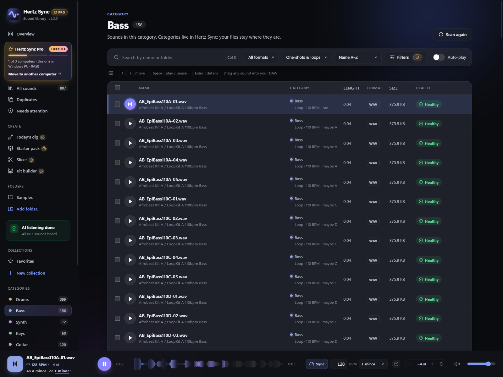
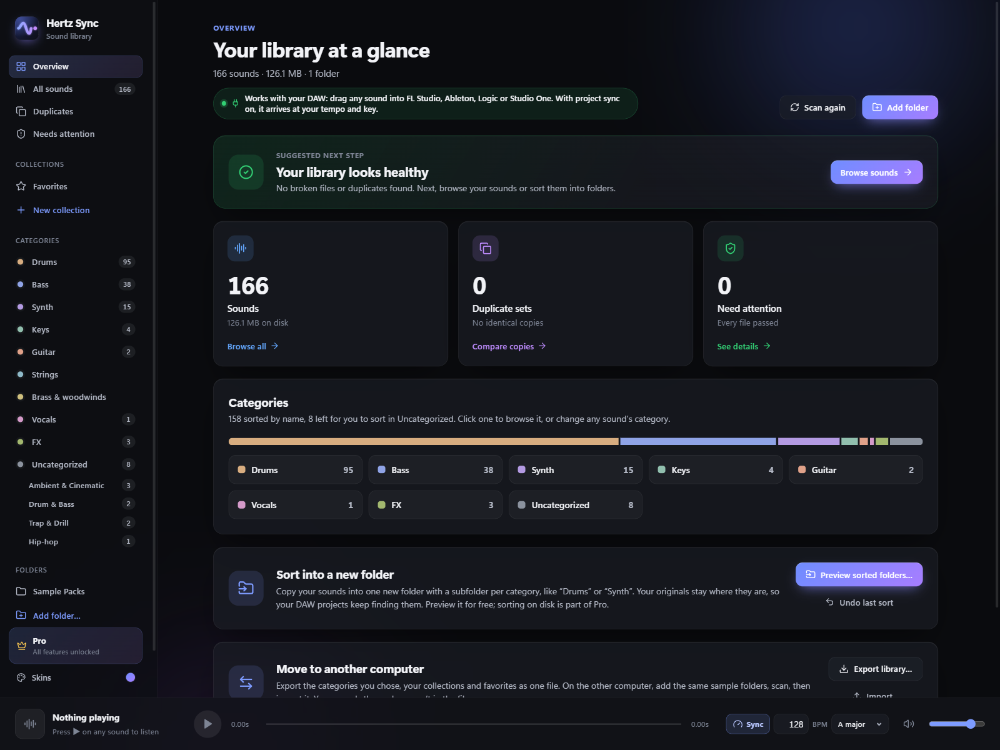
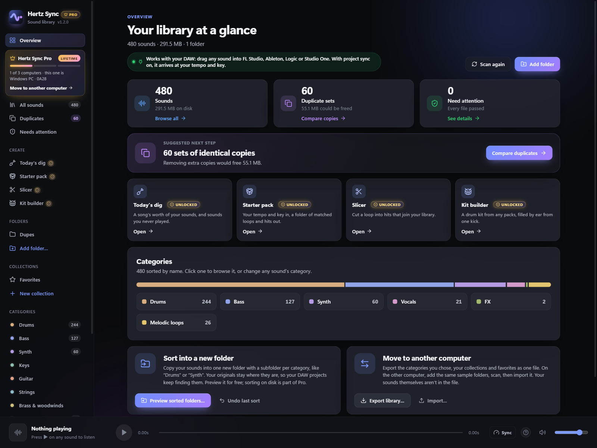
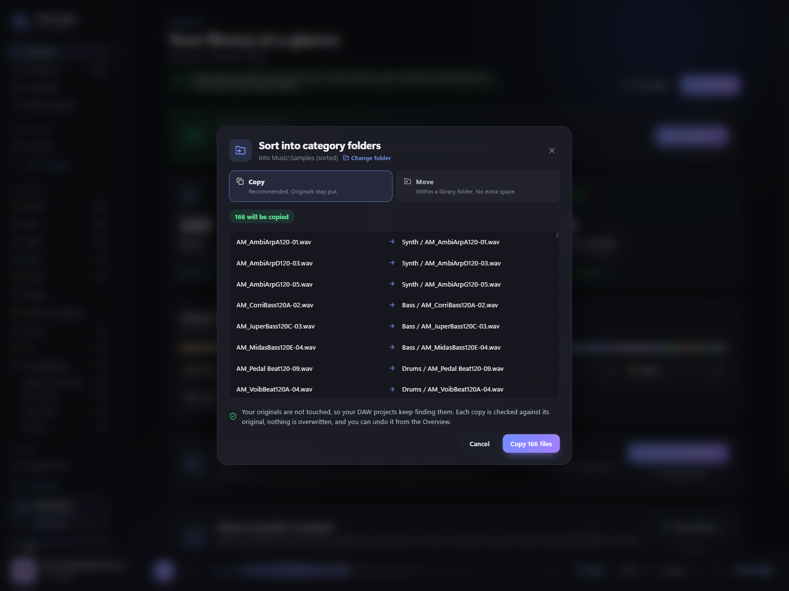
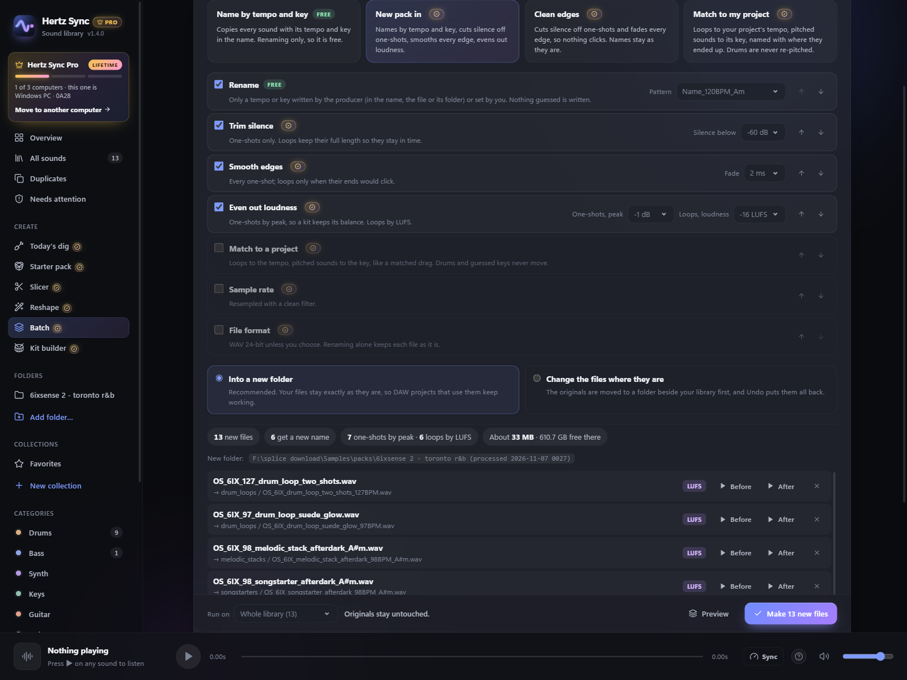
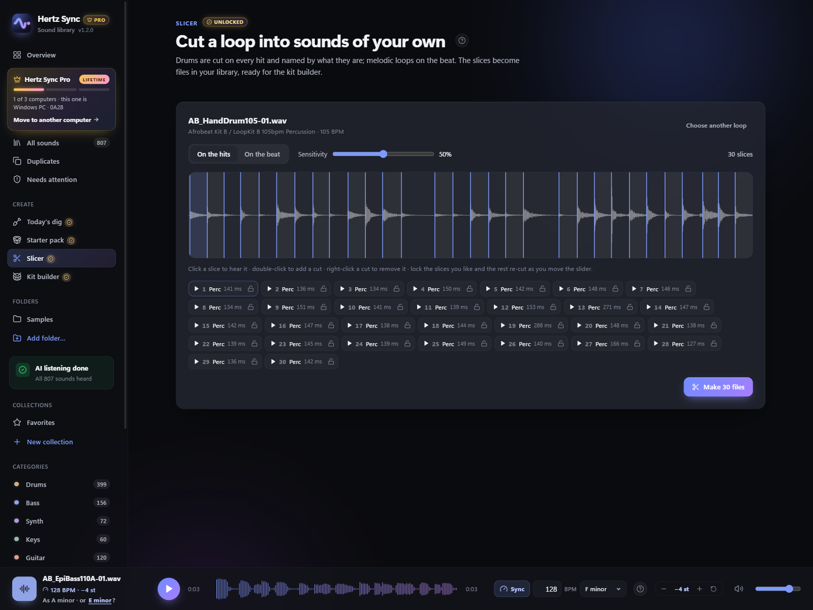
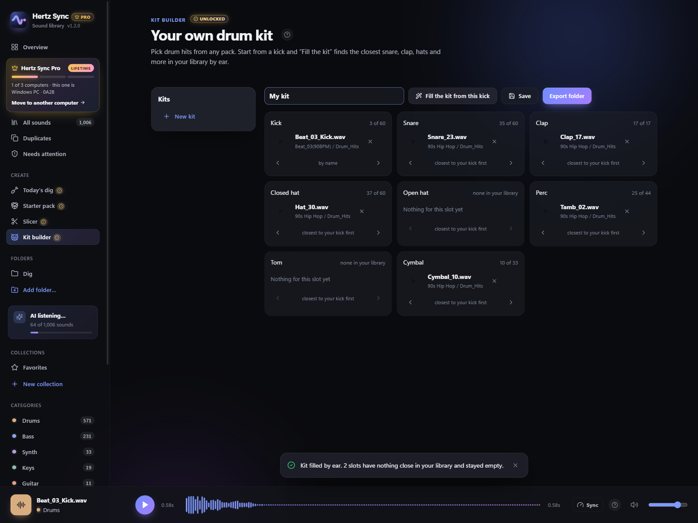
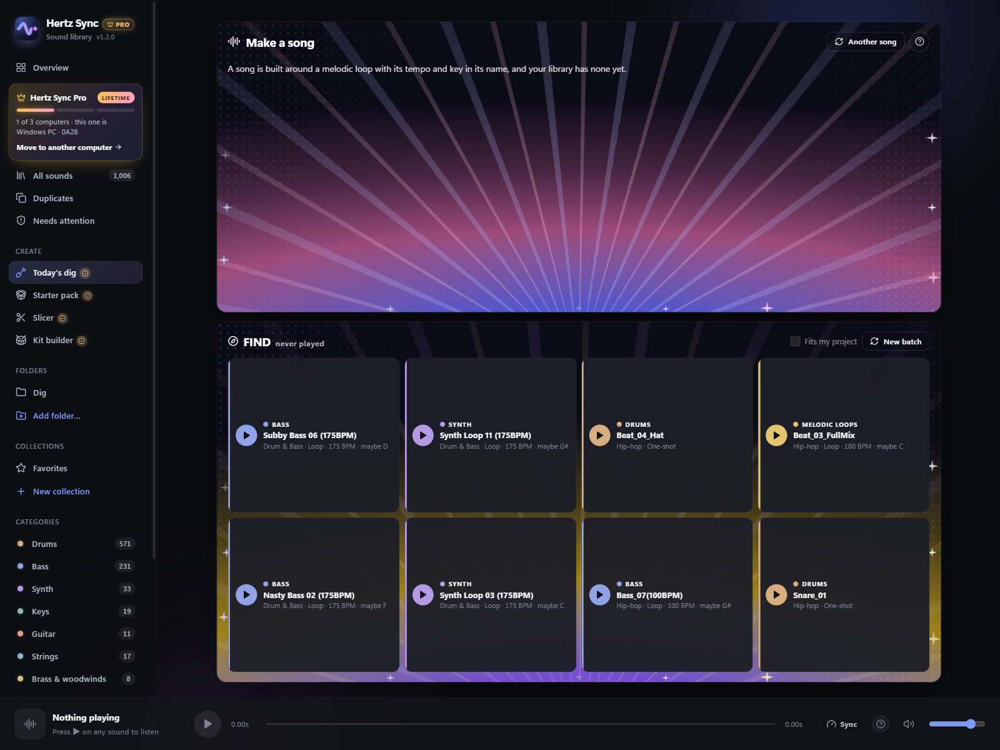

Hear every loop in your track's tempo and key.
No more dragging a loop in, warping it, re-pitching it and finding out it doesn't fit. Hertz Sync plays your samples at your project's tempo and key while you browse, and what you drag into the DAW already fits.
Windows 10/11 and macOS 11+ (Apple Silicon) · Runs entirely on your computer

A loop that sounds right on its own rarely fits your track
It's at the wrong tempo and in the wrong key, so you find out only after dragging it in, warping it and re-pitching it. Do that twenty times and the idea is gone.
Without Hertz Sync
- Drag a loop onto the timeline
- Warp it to the project tempo
- Transpose it to the key
- Listen. Doesn't fit.
- Delete it and start again
With Hertz Sync
- Set your project's tempo and key once
- Browse with ↑ ↓: every loop already plays in your tempo and key
- Drag in the one that fits. Done.
Hear it in your project before you drop it
Loops are stretched to your tempo and moved to your key as you browse, with a spectral stretcher that keeps drums tight and chords clean. Copies come out a whole number of beats long and loop without a click, so they sit on your DAW's grid.
With Pro, what you drag in arrives exactly as you heard it: no warping or re-pitching on the timeline.
Tempos the producer wrote down
The tempo in a file's name, the one embedded in the file itself (ACID WAVs, Apple Loops, MP3 tags) and a folder named with one tempo are all used as is, so most loops never need guessing.
Keys from the name, or by ear
A key in the file name is used as is. For sounds without one, Hertz Sync suggests two keys to pick from (in our tests on commercial packs, the right one was among them for about 8 in 10 loops), or tune it yourself with − / +. It remembers your choice.
Never moves what it shouldn't
Drums and effects are never re-pitched unless you tune them yourself, and a key it only guesses is never used without your click. A tempo it isn't sure of plays as is, and you can set it yourself: half, double, or typed.
Any DAW that takes a dropped file
FL Studio, Ableton Live, Logic Pro, Studio One, Reaper, Cubase, Bitwig. Matched copies are standard WAV files kept in Music/Hertz Sync/Synced Sounds, so your projects keep finding them.
You own the sound. You just can't find it.
Splice downloads, free packs and your own recordings, spread over a dozen folders with names like audio_042_final2.wav.
Every pack in one library, sorted by what it is
Add your sample folders and Hertz Sync sorts them into Drums, Bass, Synth, Keys, Guitar, Strings, Brass, Vocals and FX from the names packs already use. Loops that mix instruments are grouped by style: lo-fi, R&B, trap, house and more. Nothing on disk moves.
Search across everything, then audition with the arrow keys: each sound plays as you land on it.

Find similar sounds
Found the kick that works? Get the closest matches in your library, ranked by an on-device AI, by how they sound, not how they're named. Pro
Filters that fit the track
BPM range, length, and only sounds that fit your project's key. Pro
Collections
A kit per project, without moving a file. Free and unlimited.
Gigabytes of duplicates and files that won't open
Packs overlap and downloads repeat. The first scan shows how many byte-identical copies you have, how much space they take, and which files are damaged or unreadable, across every folder you add.
Pick which copy to keep (it suggests one); the extras go to the Recycle Bin (Windows) or the Trash (Mac), so you can always get them back.

Real folders, without breaking old projects
Copy your whole library into one new folder with a subfolder per category. Your originals stay where they are, so older DAW projects still open. Every copy is checked against its original, and one click undoes it all.

One recipe for a whole pack
Run the same steps over a folder, a pack, your selection or your whole library, and see every result before anything is written.
Your originals stay exactly as they are
Pick a recipe or build your own: rename by tempo and key, cut silence off one-shots, smooth every edge so nothing clicks, even out loudness, match everything to your project's tempo and key, one sample rate, WAV or FLAC. Preview every new name and listen before and after first.
The results go to a new folder next to your library, with the same folders inside, so your DAW projects keep finding the originals. Undo sends the new folder to the Recycle Bin. Changing files where they are is there too, only when you turn it on, with a warning and a full Undo.

Loudness that keeps a kit's balance
One-shots are evened out by peak, so a kick stays louder than a hat; loops by LUFS. Each sound shows which one it gets.
Names you can trust
Only a tempo or key the producer wrote down, or one you set, goes into a name. Nothing guessed is ever written.
Renaming is free
A recipe that only renames runs on the free plan. Trimming, fades, loudness, matching and format changes are part of Pro.
Your packs, turned into new sounds
The loops you already own become hits, kits and fresh ideas, matched to your track and ready to drag in.
Cut any loop into sounds of your own
Drum loops are cut on every hit and each slice is named by ear: Kick, Snare, Hat. Melodic loops are cut on the beat. Lock the slices you like, move the sensitivity, and the rest re-cut around them.
The slices become files in your library, ready for the kit builder. Seeing the cuts and listening are free; writing the files is Pro.

A drum kit from every pack you own
Pick a kick and "Fill the kit" finds the closest snare, clap, hats, perc and cymbal in your whole library, by how they sound. Swap any slot, keep as many kits as you like, and export each one as a numbered folder for your sampler or drum machine.

The packs you bought, finally heard
Every day Hertz Sync digs out sounds you own but have never played, a different category or style on every card. Or have it draw a song's worth of parts that play together: one key, one tempo, drums, bass, chords and a lead.

Starter packs
Set your track's tempo and key and get a folder of drum loops, bass, melodic loops, pads and hits from your whole library, already matched. Drag the lot into your DAW.
Three computers, move it yourself
One key unlocks Pro on 3 of your computers at a time. New computer? Deactivate the old one in the app, or free its seat on your computers page. No emails, no waiting.
Five extra skins
Tape, Phosphor, Ember, Mint and Noir, the new black glass with a holographic glow. Every Pro feature shows Unlocked, for life.
No subscription
Pro is one payment, $39.90, with every 1.x update. Not happy? Full refund within 7 days.
Your files stay yours
No account, no cloud, no tracking. Scanning, sorting and the AI all run on your computer.
Works offline
Nothing about your library is ever sent. Online, it only checks your license key with the Hertz Sync license server and asks GitHub whether a newer version is out.
Free to use. Pro once, for good.
No subscription. Buy Pro once and every 1.x update is included.
Free
- Up to 40,000 sounds
- Scan, health check and duplicate cleanup
- Categories from file and folder names
- Sort into real folders on disk, with undo
- Hear loops in your project's tempo and key
- Drag sounds into your DAW, 5 a day already matched
- Preview the slicer, kit builder and starter packs
- Batch renaming by tempo and key
- Unlimited collections, 1 kit
Pro
- Everything in Free, no sound limit
- Every drag already in your project's tempo and key
- Batch processing: trim, fades, loudness, match, WAV or FLAC
- Slicer, kit builder, starter packs and today's dig
- Find similar sounds (on-device AI)
- BPM, length and key filters
- 5 extra skins
- 3 computers at a time, move Pro yourself anytime
Secure checkout by Gumroad. Your license key arrives by email; paste it into the app to unlock Pro on 3 computers at a time. New computer? Deactivate the old one in the app, or free its seat on your computers page. No emails, no waiting.
Download Hertz Sync
Free download. Pro unlocks inside the app with your license key.
Windows
Windows 10 or 11, 64-bit
Download for WindowsVersion 1.4.0 · SHA-256ec77d758f4246f29b3e3fc2a4dcec6524e1f71fb3ca2c1e537da584ad921aad7
macOS
macOS 11 or later, Apple Silicon (M1 and newer)
Download for MacVersion 1.4.0 · SHA-2561ecc555b9f1a3e36b04c36f718b86717b496eb8ff75dc27126ec20154625eac0
Safe to install: no viruses, ads or bundled software
Hertz Sync contains no malware, adware or third-party extras, and collects no data: your library never leaves your computer. The only thing it ever sends is your license key and an anonymous id for your computer, to check the key.
Why Windows or macOS may warn you anyway: both show a warning for any app from a new, independent developer that isn't yet signed with a paid certificate. It's about who published the file, not about anything found in it.
- Windows "Windows protected your PC": click More info, then Run anyway.
- macOS 15 Sequoia or later "Hertz Sync Not Opened": click Done, open System Settings → Privacy & Security, scroll down to "Hertz Sync was blocked…" and click Open Anyway, then Open Anyway again and enter your Mac password.
- macOS 11 to 14 "can't be opened": right-click Hertz Sync in Applications, choose Open, then Open again.
- macOS says the app "is damaged": open Terminal, run
xattr -dr com.apple.quarantine "/Applications/Hertz Sync.app"and open the app again. This only removes the "downloaded from the internet" mark from Hertz Sync.
You only do this once; after that Hertz Sync opens normally.
To check your download is the original, compare its SHA-256 with the one above (Windows: certutil -hashfile HertzSync-Setup-x64.exe SHA256; Mac: shasum -a 256 HertzSync-macOS-AppleSilicon.dmg). You can also scan it at VirusTotal.
Move Pro to a new computer
One key unlocks Pro on 3 computers at a time. Switching computers takes a minute, no emails, no waiting.
- Old computer still works? Open the Pro window in Hertz Sync and click Deactivate on this computer.
- Lost, sold or won't start? Open your computers page, enter your license key and free its seat.
- Then paste your key into Hertz Sync on the new computer. Reinstalling on the same computer uses no new seat.
Still stuck? Reply to your Gumroad receipt email and we'll free it for you.
Questions
Does it change or move my sample files?
Not unless you ask it to. Categories live inside Hertz Sync. Sorting on disk copies your sounds into a new folder by default and leaves the originals where they are; moving is optional and can be undone.
Which DAWs does it work with?
Any DAW that accepts a dropped audio file: FL Studio, Ableton Live, Logic Pro, Studio One, Reaper, Cubase, Bitwig and more. Matched copies are standard WAV files kept in Music/Hertz Sync/Synced Sounds, so your projects keep finding them.
Does anything get uploaded?
No. Scanning, sorting and the AI listening all run on your computer. The only network request is checking your license key when you activate Pro and once a day after that.
How many computers can I use Pro on?
One key unlocks Pro on 3 computers at a time. Moving to a new one? Deactivate Pro on the old one in the app (Pro window), or free its seat on your computers page if that computer is lost or won’t start. Reinstalling on the same computer uses no new seat.
Who makes Hertz Sync?
I’m Quillon Holden, an independent developer and music producer. I built Hertz Sync under my label Vykra because my own sample folders had become impossible to search, and finding a loop that fit the track took longer than making the track. Questions or ideas? Reply to your purchase email and it comes straight to me.
Is Pro a subscription?
No. It's a one-time $39.90 purchase and includes every 1.x update.
Can I get a refund?
Yes. Within 7 days of buying, reply to your purchase email and you'll get a full refund, no reason needed. See the refund policy.
Windows says "unknown publisher" or macOS won't open it?
Windows: click "More info" then "Run anyway". macOS 15 or later: click Done, then go to System Settings → Privacy & Security and click "Open Anyway" next to Hertz Sync. macOS 11 to 14: right-click the app, choose Open, then Open again. See the step-by-step help for details. This happens with apps from small independent developers and only the first time.